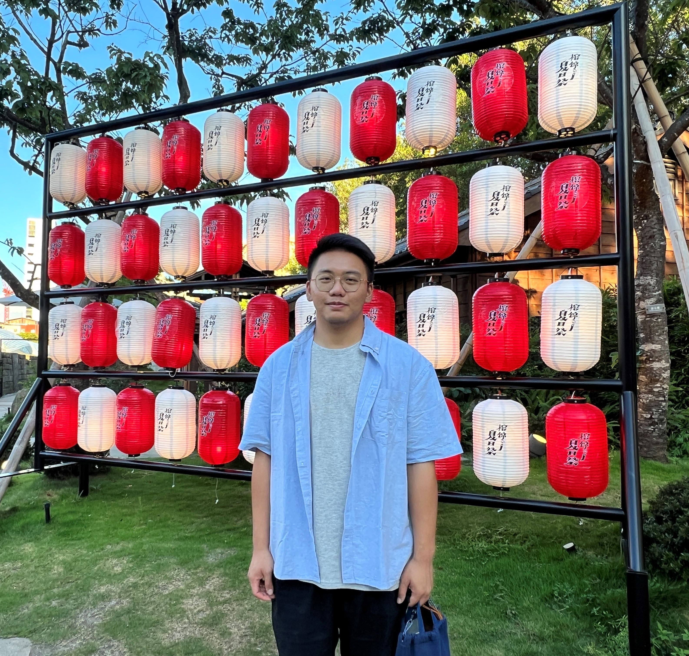

翁睿昕 Eric Wong
關於我 About me
我是個喜歡挑戰新事物的人，這裡是我的履歷網站，上方學歷和經歷有詳細工作及學習經歷，作品集則是有之前做過的案子，右下角的Download PDF可以下載我的履歷，歡迎詳閱。
I am an individual who enjoys challenging new endeavors. This is my resume website, where detailed information about my educational background and work experiences can be found above. The portfolio showcases the projects I have previously undertaken. You can download my resume by clicking on the 'Download PDF' button in the bottom right corner. Feel free to explore and learn more about me.
Download PDFeric032807@gmail.com